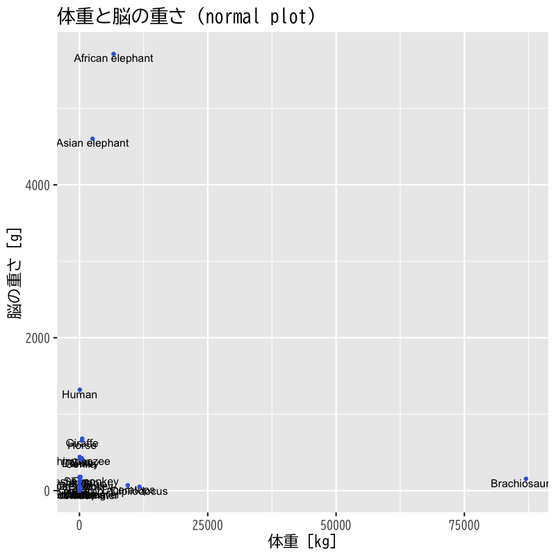
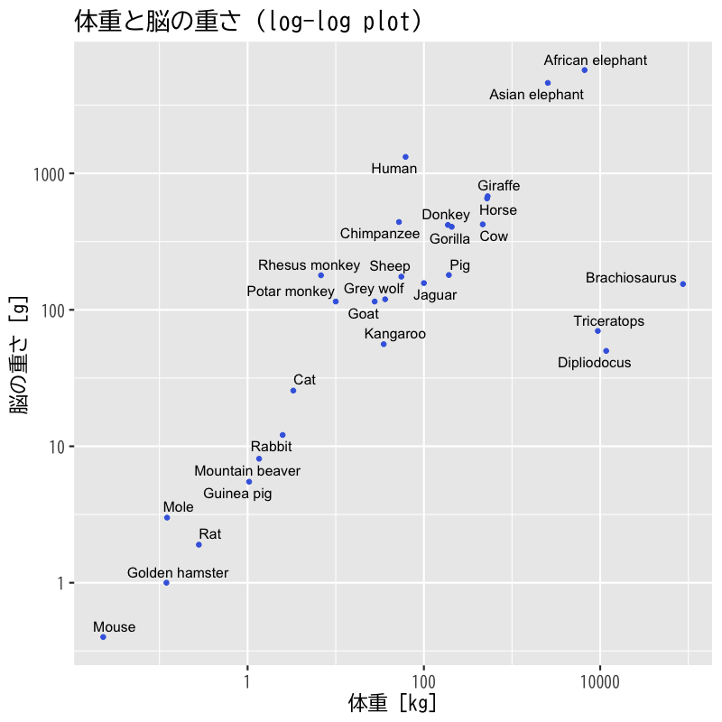

回帰分析
予測と発展的なモデル
(Press ? for help, n and p for next and previous slide)
講義の内容
- 第1回: 回帰モデルの考え方と推定
- 第2回: モデルの評価
- 第3回: モデルによる予測と発展的なモデル
回帰分析の復習
線形回帰モデル
- 目的変数 を 説明変数 で説明する関係式を構成:
- 説明変数: \(x_1,\dotsc,x_p\) (p次元)
- 目的変数: \(y\) (1次元)
回帰係数 \(\beta_0,\beta_1,\dotsc,\beta_p\) を用いた一次式:
\begin{equation} y=\beta_0+\beta_1x_1+\dotsb+\beta_px_p \end{equation}誤差項 を含む確率モデルで観測データを表現:
\begin{equation} y_i=\beta_0+\beta_1 x_{i1}+\cdots+\beta_px_{ip}+\epsilon_i \quad (i=1,\dotsc,n) \end{equation}
問題設定
確率モデル:
\begin{equation} \boldsymbol{y} =X\boldsymbol{\beta}+\boldsymbol{\epsilon} \end{equation}式の評価: 残差平方和 の最小化による推定
\begin{equation} S(\boldsymbol{\beta}) =(\boldsymbol{y}-X\boldsymbol{\beta})^{\mathsf{T}} (\boldsymbol{y}-X\boldsymbol{\beta}) \end{equation}
解
解の条件: 正規方程式
\begin{equation} X^{\mathsf{T}}X\boldsymbol{\beta} =X^{\mathsf{T}}\boldsymbol{y} \end{equation}解の一意性: Gram 行列 \(X^{\mathsf{T}}X\) が正則
\begin{equation} \hat{\boldsymbol{\beta}} = (X^{\mathsf{T}}X)^{-1} X^{\mathsf{T}}\boldsymbol{y} \end{equation}
寄与率
決定係数 (R-squared):
\begin{equation} R^2 = 1-\frac{\sum_{i=1}^n\hat{\epsilon}_i^2}{\sum_{i=1}^n(y_i-\bar{y})^2} \end{equation}自由度調整済み決定係数 (adjusted R-squared):
\begin{equation} \bar{R}^2 = 1-\frac{\frac{1}{n{-}p{-}1}\sum_{i=1}^n\hat{\epsilon}_i^2} {\frac{1}{n{-}1}\sum_{i=1}^n(y_i-\bar{y})^2} \end{equation}- 不偏分散で補正
実データによる例
東京の8月の気候 (気温,降雨,日射,降雪,風速,気圧,湿度,雲量) に関するデータ(の一部)
month day day_of_week temp rain solar snow wdir wind press humid cloud 214 8 1 Sat 26.1 0.5 19.79 0 NE 2.6 1009.3 77 7.8 215 8 2 Sun 26.3 0.0 19.53 0 SSE 2.4 1011.0 75 5.5 216 8 3 Mon 27.2 0.0 24.73 0 SSE 2.4 1011.0 74 3.8 217 8 4 Tue 28.3 0.0 24.49 0 SSE 2.9 1012.2 77 4.3 218 8 5 Wed 29.1 0.0 24.93 0 S 2.9 1013.4 76 3.3 219 8 6 Thu 28.5 0.0 24.02 0 SSE 3.9 1010.5 79 7.8 220 8 7 Fri 29.5 0.0 22.58 0 S 3.4 1005.0 71 7.5 221 8 8 Sat 28.1 0.0 15.49 0 SE 2.7 1006.1 79 8.3 222 8 9 Sun 28.7 0.0 19.96 0 SSE 2.4 1006.9 77 9.5 223 8 10 Mon 30.5 0.0 20.26 0 SE 2.4 1010.3 73 10.0 224 8 11 Tue 31.7 0.0 25.50 0 S 4.0 1009.7 67 2.8 225 8 12 Wed 30.0 0.5 18.24 0 SSE 2.5 1009.0 79 6.8 226 8 13 Thu 29.4 21.5 19.01 0 N 2.2 1006.4 82 5.0 227 8 14 Fri 29.4 0.0 19.85 0 SE 2.8 1005.5 78 2.0
- 作成した線形回帰モデルを検討する
- モデル1: 気温 = F(気圧)
- モデル2: 気温 = F(気圧, 日射)
- モデル3: 気温 = F(気圧, 日射, 湿度)
- モデル4: 気温 = F(気圧, 日射, 雲量)
説明変数と目的変数の関係

Figure 1: 説明変数と目的変数の散布図
観測値とあてはめ値の比較

Figure 2: モデルの比較
モデルの評価
- 決定係数
モデル1: 気温 = F(気圧)
[1] "R2: 0.0169 ; adj. R2: -0.017"
モデル2: 気温 = F(気圧, 日射)
[1] "R2: 0.32 ; adj. R2: 0.271"
モデル3: 気温 = F(気圧, 日射, 湿度) (2より改善している)
[1] "R2: 0.422 ; adj. R2: 0.358"
モデル4: 気温 = F(気圧, 日射, 雲量) (2より改善していない)
[1] "R2: 0.32 ; adj. R2: 0.245"
\(F\)-統計量による検定
- 説明変数のうち1つでも役に立つか否かを検定する
- 帰無仮説 \(H_{0}\): \(\beta_1=\dotsb=\beta_p=0\)
- 対立仮説 \(H_{1}\): \(\exists j\;\beta_j\neq0\) (少なくとも1つは役に立つ)
\(F\)-統計量: 決定係数(または残差)を用いて計算
\begin{equation} F =\frac{n{-}p{-}1}{p}\frac{R^2}{1-R^2} \end{equation}- \(p\)-値: 自由度 \(p,n{-}p{-}1\) の \(F\)-分布で計算
モデルの評価
- 決定係数と\(F\)-統計量
モデル1: 気温 = F(気圧)
[1] "R2: 0.0169 ; adj. R2: -0.017 ; F-stat: 0.498 ; p-val: 0.486"
モデル2: 気温 = F(気圧, 日射)
[1] "R2: 0.32 ; adj. R2: 0.271 ; F-stat: 6.58 ; p-val: 0.00454"
モデル3: 気温 = F(気圧, 日射, 湿度)
[1] "R2: 0.422 ; adj. R2: 0.358 ; F-stat: 6.57 ; p-val: 0.00177"
モデル4: 気温 = F(気圧, 日射, 雲量)
[1] "R2: 0.32 ; adj. R2: 0.245 ; F-stat: 4.24 ; p-val: 0.0141"
\(t\)-統計量による検定
- 回帰係数 \(\beta_j\) が回帰式に寄与するか否かを検定する
- 帰無仮説 \(H_{0}\): \(\beta_j=0\)
- 対立仮説 \(H_{1}\): \(\beta_j\neq0\) (\(\beta_j\) は役に立つ)
\(t\)-統計量: 各係数ごと，\(\zeta\) は \((X^{\mathsf{T}} X)^{-1}\) の対角成分
\begin{equation} t=\frac{\hat{\beta}_j}{\hat{\sigma}\zeta_{j}} \end{equation}- \(p\)-値: 自由度 \(n{-}p{-}1\) の \(t\)-分布を用いて計算
モデルの評価
- 回帰係数の推定量と\(t\)-統計量
モデル1: 気温 = F(気圧)
Estimate Std. Error t value Pr(>|t|) (Intercept) 120.0000 128.000 0.932 0.359 press -0.0898 0.127 -0.706 0.486- 気圧単体では回帰係数は有意ではない
モデル2: 気温 = F(気圧, 日射)
Estimate Std. Error t value Pr(>|t|) (Intercept) 274.000 117.0000 2.34 0.02670 press -0.248 0.1170 -2.13 0.04240 solar 0.261 0.0738 3.53 0.00145- 日射と組み合わせることで有意となる
- 回帰係数の推定量と\(t\)-統計量 (つづき)
モデル3: 気温 = F(気圧, 日射, 湿度)
Estimate Std. Error t value Pr(>|t|) (Intercept) 263.000 110.0000 2.39 0.0242 press -0.222 0.1100 -2.02 0.0537 solar 0.142 0.0880 1.61 0.1180 humid -0.166 0.0759 -2.18 0.0379モデル4: 気温 = F(気圧, 日射, 雲量)
Estimate Std. Error t value Pr(>|t|) (Intercept) 274.000 119.0000 2.300 0.02950 press -0.248 0.1190 -2.090 0.04610 solar 0.266 0.0915 2.910 0.00723 cloud 0.013 0.1250 0.104 0.91800- このモデルでは雲量は有用でないことが示唆される
回帰モデルによる予測
予測
新しいデータ (説明変数) \(\boldsymbol{x}\) に対する 予測値
\begin{equation} \hat{y} = (1,\boldsymbol{x}^{\mathsf{T}})\hat{\boldsymbol{\beta}}, \qquad \hat{\boldsymbol{\beta}} = (X^{\mathsf{T}}X)^{-1} X^{\mathsf{T}}\boldsymbol{y} \end{equation}予測値は元データの目的変数の重み付け線形和
\begin{equation} \hat{y} = \boldsymbol{w}(\boldsymbol{x})^{\mathsf{T}}\boldsymbol{y} \end{equation}\begin{equation} \boldsymbol{w}(\boldsymbol{x})^{\mathsf{T}} = (1,\boldsymbol{x}^{\mathsf{T}}) (X^{\mathsf{T}}X)^{-1} X^{\mathsf{T}} \end{equation}- 重みは元データと新規データの説明変数で決定
予測値の性質
推定量は以下の性質をもつ多変量正規分布
\begin{align} \mathbb{E}[\hat{\boldsymbol{\beta}}] &=\boldsymbol{\beta}\\ \mathrm{Cov}(\hat{\boldsymbol{\beta}}) &=\sigma^{2}(X^{\mathsf{T}}X)^{-1} \end{align}この性質を利用して以下の3つの値の違いを評価
\begin{align} \hat{y}&=(1,\boldsymbol{x}^{\mathsf{T}})\hat{\boldsymbol{\beta}} &&\text{(回帰式による予測値)}\\ \tilde{y}&=(1,\boldsymbol{x}^{\mathsf{T}})\boldsymbol{\beta} &&\text{(最適な予測値)}\\ y&=(1,\boldsymbol{x}^{\mathsf{T}})\boldsymbol{\beta}+\epsilon &&\text{(観測値)} \end{align}- \(\hat{y}\) と \(y\) は独立な正規分布に従うことに注意
演習
問題
- 誤差が平均0 分散 \(\sigma^{2}\) の正規分布に従うとき，
以下の問に答えなさい
- 予測値 \(\hat{y}\) の平均を求めよ
- 予測値 \(\hat{y}\) の分散を求めよ
解答例
定義にもとづいて計算する
\begin{align} \mathbb{E}[\hat{y}] &= \mathbb{E}[(1,\boldsymbol{x}^{\mathsf{T}})\hat{\boldsymbol{\beta}}]\\ &= (1,\boldsymbol{x}^{\mathsf{T}})\mathbb{E}[\hat{\boldsymbol{\beta}}]\\ &= (1,\boldsymbol{x}^{\mathsf{T}})\boldsymbol{\beta}\\ &= \tilde{y} \end{align}- 真の回帰式による最適な予測値
定義にもとづいて計算する
\begin{align} \mathrm{Var}(\hat{y}) &= \mathrm{Var}((1,\boldsymbol{x}^{\mathsf{T}}) (\hat{\boldsymbol{\beta}}-\boldsymbol{\beta}))\\ &= (1,\boldsymbol{x}^{\mathsf{T}}) \mathrm{Cov}(\hat{\boldsymbol{\beta}}-\boldsymbol{\beta}) (1,\boldsymbol{x}^{\mathsf{T}})^{\mathsf{T}}\\ &= (1,\boldsymbol{x}^{\mathsf{T}}) \mathrm{Cov}(\hat{\boldsymbol{\beta}}) (1,\boldsymbol{x}^{\mathsf{T}})^{\mathsf{T}}\\ &= (1,\boldsymbol{x}^{\mathsf{T}}) \sigma^{2} (X^{\mathsf{T}}X)^{-1} (1,\boldsymbol{x}^{\mathsf{T}})^{\mathsf{T}}\\ &= \sigma^{2} (1,\boldsymbol{x}^{\mathsf{T}}) (X^{\mathsf{T}}X)^{-1} (1,\boldsymbol{x}^{\mathsf{T}})^{\mathsf{T}} \end{align}
信頼区間
最適な予測値との差
差の分布は以下の平均・分散をもつ正規分布に従う
\begin{align} \mathbb{E}[\tilde{y}-\hat{y}] &=(1,\boldsymbol{x}^{\mathsf{T}})\boldsymbol{\beta} -(1,\boldsymbol{x}^{\mathsf{T}})\mathbb{E}[\hat{\boldsymbol{\beta}}] =0\\ \mathrm{Var}(\tilde{y}-\hat{y}) &=\underbrace{\sigma^{2}(1,\boldsymbol{x}^{\mathsf{T}})(X^{\mathsf{T}}X)^{-1} (1,\boldsymbol{x}^{\mathsf{T}})^{\mathsf{T}}}_{\text{\(\hat{\boldsymbol{\beta}}\)の推定誤差による分散}} =\sigma^{2}\gamma_{c}(\boldsymbol{x})^{2} \end{align}正規化による表現
\begin{equation} \frac{\tilde{y}-\hat{y}}{\sigma\gamma_{c}(\boldsymbol{x})} \sim \mathcal{N}(0,1) \end{equation}
信頼区間
未知の分散を不偏分散で推定
\begin{equation} Z= \frac{\tilde{y}-\hat{y}}{\hat{\sigma}\gamma_{c}(\boldsymbol{x})} \sim \mathcal{T}(n{-}p{-}1) \quad (\text{\(t\)-分布}) \end{equation}確率 \(\alpha\) の信頼区間
\begin{equation} \mathcal{I}^{c}_{\alpha} = \left( \hat{y}-C_{\alpha}\hat{\sigma}\gamma_{c}(\boldsymbol{x}),\; \hat{y}+C_{\alpha}\hat{\sigma}\gamma_{c}(\boldsymbol{x}) \right) \end{equation}\begin{equation} P(|Z| < {C_{\alpha}} | Z\sim\mathcal{T}(n{-}p{-}1)) =\alpha \end{equation}- 最適な予測値 \(\tilde{y}\) が入ることが期待される区間
演習
問題
- 以下の問に答えなさい
信頼区間について以下の式が成り立つことを示せ
\begin{equation} P(\tilde{y}\in\mathcal{I}^{c}_{\alpha}) =\alpha \end{equation}- 観測値と予測値の差 \(y-\hat{y}\) の平均と分散を求めよ
解答例
\(C_{\alpha}\) の定義にもとづいて計算すればよい
\begin{align} \alpha &= P(|Z| < {C_{\alpha}})\\ &= P\left( \left|\frac{\tilde{y}-\hat{y}}{\hat{\sigma}\gamma_{c}(\boldsymbol{x})}\right| < {C_{\alpha}} \right)\\ &= P\left( |\tilde{y}-\hat{y}| < C_{\alpha}\hat{\sigma}\gamma_{c}(\boldsymbol{x}) \right)\\ &= P\left( -C_{\alpha}\hat{\sigma}\gamma_{c}(\boldsymbol{x}) < \tilde{y}-\hat{y} < C_{\alpha}\hat{\sigma}\gamma_{c}(\boldsymbol{x}) \right)\\ &= P\left( \hat{y}-C_{\alpha}\hat{\sigma}\gamma_{c}(\boldsymbol{x}) < \tilde{y} < \hat{y}+C_{\alpha}\hat{\sigma}\gamma_{c}(\boldsymbol{x}) \right) \end{align}
独立性を利用して計算する
\begin{align} \mathbb{E}[y-\hat{y}] &= \mathbb{E}[y] -\mathbb{E}[\hat{y}]\\ &= \tilde{y}-\tilde{y}\\ &= 0\\ \mathrm{Var}(y-\hat{y}) &= \mathrm{Var}(y) +\mathrm{Var}(\hat{y})\\ &= \sigma^{2} + \sigma^{2} (1,\boldsymbol{x}^{\mathsf{T}}) (X^{\mathsf{T}}X)^{-1} (1,\boldsymbol{x}^{\mathsf{T}})^{\mathsf{T}} \end{align}
予測区間
観測値との差
差の分布は以下の平均・分散をもつ正規分布に従う
\begin{align} \mathbb{E}[y-\hat{y}] &=(1,\boldsymbol{x}^{\mathsf{T}})\boldsymbol{\beta} +\mathbb{E}[\boldsymbol{\epsilon}] -(1,\boldsymbol{x}^{\mathsf{T}}) \mathbb{E}[\hat{\boldsymbol{\beta}}] =0\\ \mathrm{Var}(y-\hat{y}) &=\underbrace{\sigma^{2} (1,\boldsymbol{x}^{\mathsf{T}})(X^{\mathsf{T}}X)^{-1} (1,\boldsymbol{x}^{\mathsf{T}})^{\mathsf{T}} }_{\text{\(\hat{\boldsymbol{\beta}}\)の推定誤差による分散}} +\underbrace{\sigma^{2}}_{\text{誤差の分散}} =\sigma^{2}\gamma_{p}(\boldsymbol{x})^{2} \end{align}正規化による表現
\begin{equation} \frac{y-\hat{y}}{\sigma\gamma_{p}(\boldsymbol{x})} \sim \mathcal{N}(0,1) \end{equation}
予測区間
未知の分散を不偏分散で推定
\begin{equation} Z= \frac{y-\hat{y}}{\hat{\sigma}\gamma_{p}(\boldsymbol{x})} \sim \mathcal{T}(n{-}p{-}1) \quad (\text{\(t\)-分布}) \end{equation}確率 \(\alpha\) の予測区間
\begin{equation} \mathcal{I}^{p}_{\alpha} = \left( \hat{y}-C_{\alpha}\hat{\sigma}\gamma_{p}(\boldsymbol{x}),\; \hat{y}+C_{\alpha}\hat{\sigma}\gamma_{p}(\boldsymbol{x}) \right) \end{equation}\begin{equation} P(|Z| < {C_{\alpha}} | Z\sim\mathcal{T}(n{-}p{-}1)) =\alpha \end{equation}- 観測値 \(y\) が入ることが期待される区間
- \(\gamma_{p}>\gamma_{c}\) なので信頼区間より広くなる
解析の事例
信頼区間と予測区間
- 東京の気候データを用いて以下を試みる
8月のデータで回帰式を推定する
気温 = F(気圧, 日射, 湿度)
- 上記のモデルで9月のデータを予測する

Figure 3: 8月のあてはめ値の信頼区間

Figure 4: 8月モデルによる9月の予測値の信頼区間

Figure 5: 8月モデルによる9月の予測値の予測区間
発展的なモデル
非線形性を含むモデル
- 目的変数 \(Y\)
- 説明変数 \(X_1,\dotsc,X_p\)
- 説明変数の追加で対応可能
- 交互作用 (交差項): \(X_iX_j\) のような説明変数の積
- 非線形変換: \(\log(X_k)\) のような関数による変換
カテゴリカル変数を含むモデル
- 数値ではないデータ
- 悪性良性
- 血液型
- 適切な方法で数値に変換して対応:
- 2値の場合は 1,0 (真，偽) を割り当てる
- 悪性: 1
- 良性: 0
- 3値以上の場合は ダミー変数 を利用する (カテゴリ数-1個)
- A型: (1,0,0)
- B型: (0,1,0)
- O型: (0,0,1)
- AB型: (0,0,0)
- 2値の場合は 1,0 (真，偽) を割り当てる
解析の事例
非線形変換による線形化
体重と脳の重さの関係
body brain Mountain beaver 1.350 8.1 Cow 465.000 423.0 Grey wolf 36.330 119.5 Goat 27.660 115.0 Guinea pig 1.040 5.5 Dipliodocus 11700.000 50.0 Asian elephant 2547.000 4603.0 Donkey 187.100 419.0 Horse 521.000 655.0 Potar monkey 10.000 115.0 Cat 3.300 25.6 Giraffe 529.000 680.0 Gorilla 207.000 406.0 Human 62.000 1320.0 African elephant 6654.000 5712.0 Triceratops 9400.000 70.0 Rhesus monkey 6.800 179.0 Kangaroo 35.000 56.0 Golden hamster 0.120 1.0 Mouse 0.023 0.4 Rabbit 2.500 12.1 Sheep 55.500 175.0 Jaguar 100.000 157.0 Chimpanzee 52.160 440.0 Rat 0.280 1.9 Brachiosaurus 87000.000 154.5 Mole 0.122 3.0 Pig 192.000 180.0
散布図 (変換なし)

Figure 6: 散布図 (データの変換なし)
散布図 (x軸を対数変換)

Figure 7: 散布図 (体重を対数変換)
散布図 (xy軸を対数変換)

Figure 8: 散布図 (体重と脳の重さを対数変換)
非線形な関係の分析
- 東京の気候データを用いて
気温に影響する変数の関係を検討する
- 日射量と気圧の線形回帰モデル
(日射量と気圧が気温にどのように影響するか検討する) - これらの交互作用を加えた線形回帰モデル
(日射量と気圧の相互の関係の影響を検討する)
- 日射量と気圧の線形回帰モデル
日射量，気圧の線形回帰モデル
Estimate Std. Error t value Pr(>|t|) (Intercept) 274.000 117.0000 2.34 0.02670 solar 0.261 0.0738 3.53 0.00145 press -0.248 0.1170 -2.13 0.04240 [1] "R2: 0.32 ; adj. R2: 0.271 ; F-stat: 6.58 ; p-val: 0.00454"係数の正負から
- 日射が高くなるほど
- 気圧が低くなるほど
気温が高くなることが示唆される
交互作用を加えた線形回帰モデル
Estimate Std. Error t value Pr(>|t|) (Intercept) -944.0000 820.0000 -1.15 0.260 solar 55.0000 36.5000 1.51 0.144 press 0.9610 0.8140 1.18 0.248 solar:press -0.0543 0.0362 -1.50 0.145 [1] "R2: 0.372 ; adj. R2: 0.302 ; F-stat: 5.33 ; p-val: 0.00513"2次式を整理すると
- ある気圧より低い場合には日射量が高くなるほど
- ある日射量より低い場合には気圧が高くなるほど
気温が高くなることが示唆される
- 係数の有意性は低いのでより多くのデータでの分析が必要
カテゴリカル変数の利用
- 東京の気候データを用いて
気温を回帰するモデルを検討する
- 降水の有無を表すカテゴリカル変数を用いたモデル
(雨が降ると気温が変化することを検証する) - 月をカテゴリカル変数として加えたモデル
(月毎の気温の差を考慮する)
- 降水の有無を表すカテゴリカル変数を用いたモデル
降水の有無を表すカテゴリカル変数を用いたモデル
Estimate Std. Error t value Pr(>|t|) (Intercept) 15.80 0.499 31.70 7.49e-107 rainTRUE 1.96 0.821 2.38 1.76e-02 [1] "R2: 0.0154 ; adj. R2: 0.0127 ; F-stat: 5.68 ; p-val: 0.0176"- 降水の有無は気温の予測に無関係ではないと考えられる
- 決定係数から回帰式としての説明力は極めて低い
月をカテゴリカル変数として加えたモデル
Estimate Std. Error t value Pr(>|t|) (Intercept) 7.590 0.452 16.800 6.46e-47 rainTRUE -1.600 0.296 -5.390 1.32e-07 month2 0.962 0.638 1.510 1.32e-01 month3 3.720 0.625 5.950 6.48e-09 month4 5.960 0.631 9.450 4.94e-19 month5 12.600 0.625 20.100 1.88e-60 month6 16.400 0.632 26.000 5.65e-84 month7 18.000 0.641 28.100 4.17e-92 month8 21.700 0.626 34.700 8.49e-116 month9 17.700 0.638 27.700 1.14e-90 month10 10.400 0.625 16.700 1.32e-46 month11 6.590 0.632 10.400 2.22e-22 month12 0.278 0.628 0.443 6.58e-01 [1] "R2: 0.9 ; adj. R2: 0.896 ; F-stat: 264 ; p-val: 0"
- 月毎に比較すると雨の日の方が気温が低いことが支持される
次週の予定
- 第1回: 主成分分析の考え方
- 第2回: 分析の評価と視覚化